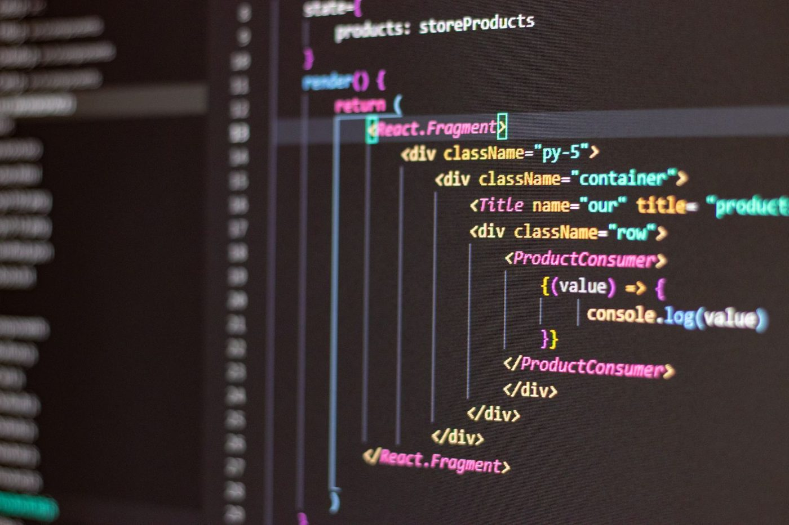

Win the San Diego auction with Google Ads
Measure it in booked work
For San Diego home service, medical and legal operators done paying for Google Ads clicks that never reach the calendar. The team that owns your account audit, GA4-to-CRM attribution, and Performance Max rebuild sits at 1135 Garnet Ave in Pacific Beach, reports in a Monday brief, and ties every dollar to a booked job, not a click.
Benefits of Google Ads Management in San Diego
One citywide campaign across a 3.3 million person metro quietly funds clicks in cities you will not drive to. The dense corridors price highest: Torrey Pines and downtown cost more per click than the rest of the county, and more than 1,400 life science firms bid on the medical side.
-
You buy booked jobs, not clicks
Spend is reported against jobs on your calendar, using GA4 wired through to your CRM rather than the platform's own conversion count.
-
Budget follows the corridor
Spend splits by the areas you actually serve, so a lead in a zone you cover is worth more than a cheaper one you cannot reach.
-
You stop overpaying the auction
Where cost per booked job stops making sense we cap it and say why, rather than letting Performance Max spend into it quietly.
-
One number every Monday
A written brief carrying cost per booked job, instead of a dashboard you have to interpret yourself.
A weekly brief you can hand your San Diego CFO
A 45-minute working session where we pull up your Google Ads account, your GA4, and your CRM side by side. You see where budget goes to queries that never close, and what a properly structured Performance Max asset group looks like. Whether or not you ever hire us.
If the math at the end of the first 30 days says we are not moving the calendar, we say so before Month 2 invoices.
Single-channel Google Ads engagements start at $20K per month. Scoped to your market.
A cost per closed deal view
Spend, clicks, leads, booked appointments, and closed revenue by campaign, reconciled inside your own CRM and updated every Monday. The headline number is cost per closed deal, not cost per lead.
A GA4 to CRM attribution bridge
Enhanced conversions, offline conversion import for phone closes, and call tracking mapped to campaign and keyword. HubSpot, Go High Level, ServiceTitan, Salesforce, and Jobber all integrate, each in its own way.
A Performance Max rebuild
Proper feeds, tightened asset groups, audience signals from your first-party CRM data, brand exclusions, and weekly audits. We do not hand Performance Max the keys and call it strategy.
The funnel we wire from San Diego spend to cost per booked job
Most San Diego accounts we audit have 30 to 60 percent of budget going to queries that never book jobs in this market. So the first three weeks follow a fixed order: read everything, wire the attribution, then rebuild on data instead of hunches.
Week 1 is the audit, Week 2 is the GA4 to CRM bridge, Week 3 ships the restructure, and every Monday after that is a brief signed by a founder.
San Diego is the home market. Here is what that does and does not change.
This is the one market where the team is physical: the founders and the in-house team work out of 1135 Garnet Ave #13 in Pacific Beach. If a working session belongs in a room, that can happen here.
What does not change is how the work runs. Every market we serve, San Diego included, gets the same dashboard, the same weekly pipeline report, and the same named owner per workstream. The office is not the deliverable. The receipt is.
One team runs the whole stack in San Diego
Most agencies sell you Google Ads in isolation. We run it inside one stack, next to SEO, Meta Ads, AI automation, CRM, and web, under one team and one dashboard, so there is no vendor finger-pointing when the number moves.
-
 01
SEO in San Diego Rankings on the queries that become booked calls, not on the ones that look good in a report.
01
SEO in San Diego Rankings on the queries that become booked calls, not on the ones that look good in a report. -
 02
Meta Ads in San Diego Facebook and Instagram acquisition with server-side conversion and iOS-safe measurement.
02
Meta Ads in San Diego Facebook and Instagram acquisition with server-side conversion and iOS-safe measurement. -

03AI Automation in San Diego Lead intake and qualification that runs 24/7, so the traffic SEO earns never goes to a competitor who answered first. -
 04
Custom CRM Development in San Diego Pipeline, routing and reporting built to your workflow, not squeezed into a stock template.
04
Custom CRM Development in San Diego Pipeline, routing and reporting built to your workflow, not squeezed into a stock template. -
 05
Full-Stack Marketing in San Diego One team across search, paid, automation and the site, so no vendor blame layer eats your budget.
05
Full-Stack Marketing in San Diego One team across search, paid, automation and the site, so no vendor blame layer eats your budget. -
 06
Web Design in San Diego Sites written to convert the traffic we send, instrumented for booked work end to end.
06
Web Design in San Diego Sites written to convert the traffic we send, instrumented for booked work end to end.
Built for one of three verticals. Pick yours: home services, medical and dental, or legal.
The questions a careful San Diego buyer is already holding
What should we budget for Google Ads management in San Diego?
Do you manage Performance Max?
How do you connect Google Ads to our CRM?
Do you run Demand Gen and YouTube?
Who actually runs the account?
How competitive is Google Ads in San Diego?
Can we meet at the Pacific Beach office?
Three founders. You will speak to one of them

Brian Hong

Michael Merlino

Dimitry Morgan
San Diego HQ, servicing ten metros nationwide

Bring your numbers. We will tell you what they say.
Forty-five minutes, no deck, and you keep the findings whether or not you hire us.